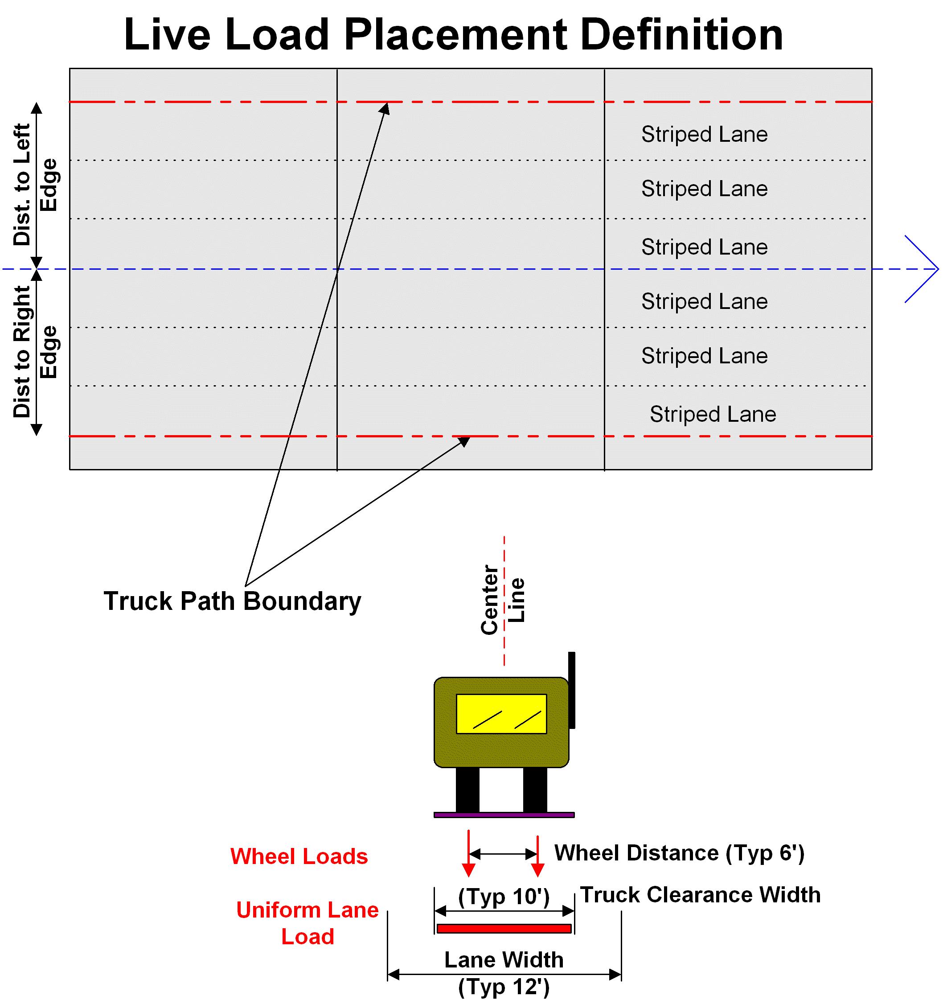

Live Load Placement

These parameters are defined in the AnalysisTable (Input Analysis Controls). The entries are:
Wheel Distance is the parameter AxleDist
Truck Clearance Width is the parameter RLaneWidth, the rating lane width.
Lane Width is the parameter SlaneWidth, the striped lane width.